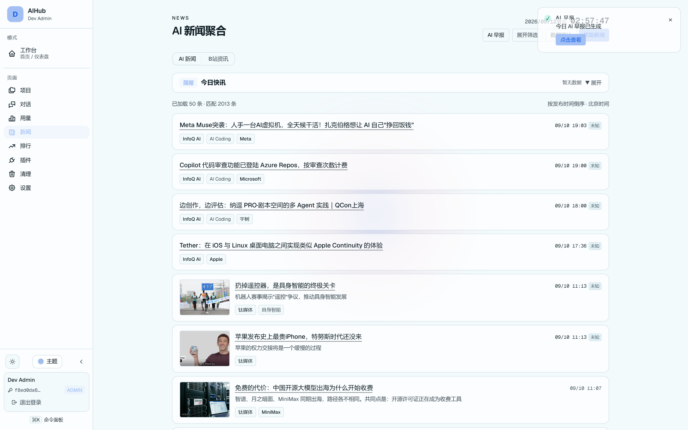
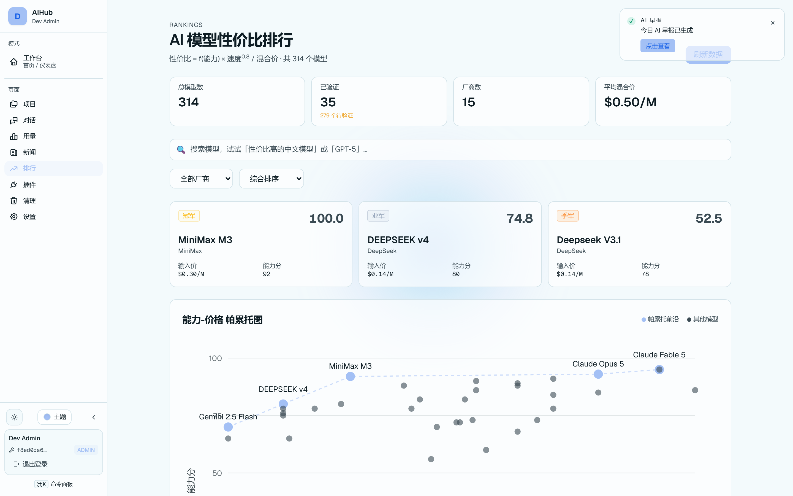
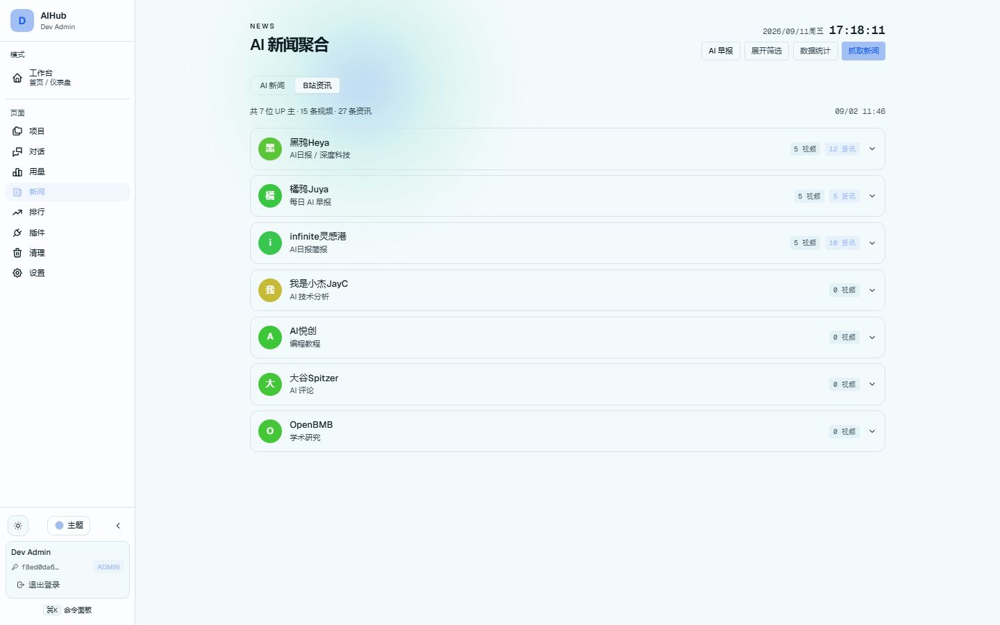
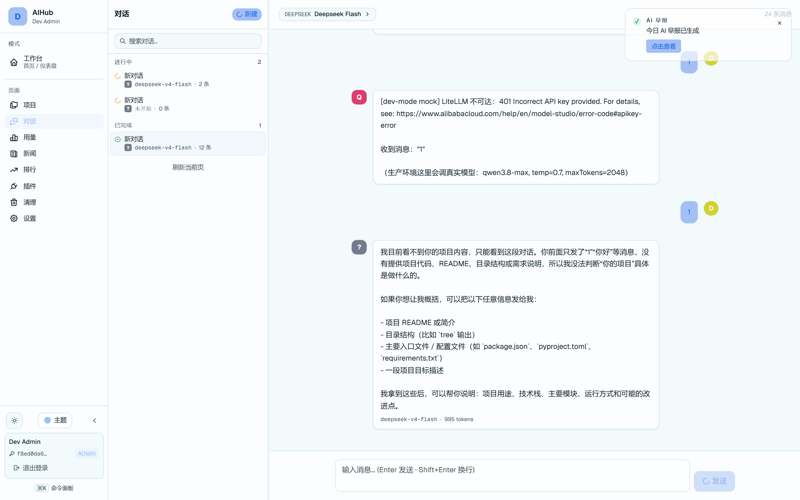
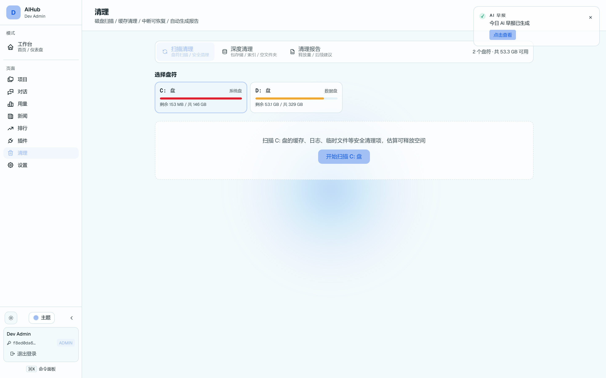

六大模块
六大模块，实际运行截图。
截图内的一切数据——新闻条目、模型价格、UP 主列表、会话记录、清理任务——都是系统真实抓取与计算的结果。

01 · AI 新闻聚合
34 个数据源统一聚合 + A/B/C/D 置信度分级 + 实体去重，真实抓取于 2026-09-10。

02 · AI 模型性价比排行
314 个模型入库 · 15 家厂商 · 已验证 35 个 · 均价 $0.50/M，帕累托前沿一眼看清。

03 · B 站 UP 主追踪
7 位 UP 主 · 15 条视频 · 27 条资讯，wbi 签名 + 写保护合并稳定抓取。
04 · AI 早报 PPT
每天早 7 点（北京时间）自动生成 11 页研究报告，历史早报随时回看下载。

05 · AI 对话
多 Provider 路由 · Key 三级解析（租户自带 → 系统默认 → 一次性）· 会话侧栏按时间分组。

06 · 清理中心
重复 / 空值 / 孤儿扫描 · 智能合并 · 一键回滚 · 扫描 / 处理 / 报告三视图分离。
AI 早报 · 6 套主题
每天 11 页，6 套主题换着看
每天早 7 点（北京时间）自动生成
Vercel Cron 定时触发，自动采集当日新闻成稿，无需人工。
11 页三幕研究报告结构
今日速览 → 深度分析 → 行动建议，研究报告风格排版，可直接汇报。
6 套可切换主题
不同视觉风格一键切换，支持历史早报回看与 PPTX 一键下载。
04 · AI 早报 PPT
每天早 7 点自动生成 · 历史回看 · 一键下载 PPTX（真实运行截图）。
How to Capture
想自己生成一套截图？
# 1. 启动开发服务器
$ pnpm dev
# 2. 跑 Playwright 截图脚本（自动登录 + 访问模块页）
$ node scripts/screenshot-landing.js
→ 输出到 landing/assets/screenshots/
# 3. 刷新本页即可看到最新截图截图脚本与站点解耦：dev server 跑起来后随时可以重新生成，画廊数据永远与真实环境一致。